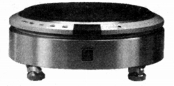
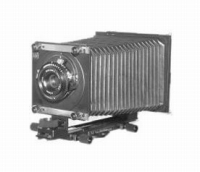
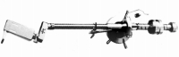
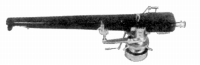
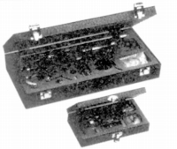

TOHO（トーホー）
アームやフォノモーター用キャビネット等を手がけていた東邦機械�鰍ﾌブランド。オーディオクラフトとは違ったタイプのパイプ交換式のアームなどがあった。

(プレイヤーキャビネット TV-30、ビクターのフォノモーターTT-101用。もしかしたら国内最後のキャビネットだったのかもしれない）
なお母体企業である東邦機械�鰍ﾍ、元々は受注による設備機械の製造を行っていたメーカーだったが、オーディオの他、1990年代には大判カメラに進出するなどしたユニークなメーカーだった。2008年頃まで、オーディオ・カメラ両分野の製品の販売を行っていたが、現在の消息は不明。

（同社のビューカメラ FC-45mini）�T.アーム
T-2401はパイプ交換式のアーム。オーディオクラフトがカートリッジに合わせてパイプを交換するのに対し、こちらはパイプ自体の材質を変えて音の変化を楽しむ物のようだ。TMA-28は好きな長さ・素材のアームパイプを用意して楽しむ「創作トーンアーム」。TMA-28・漆はそれに天然木・漆塗りのアームパイプを組み合わせた物。


(TMA-28・漆)
(TMA-28)
�U.その他
鋳鉄製の重量級のアームベースTH-80があった。